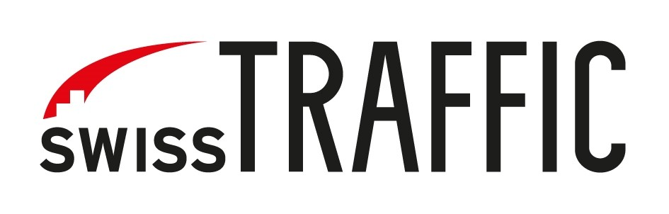
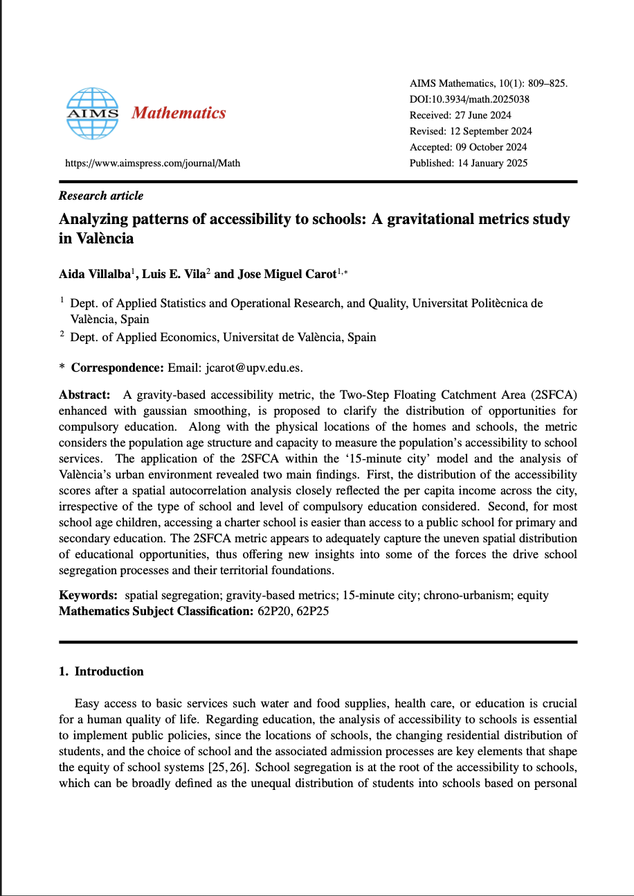
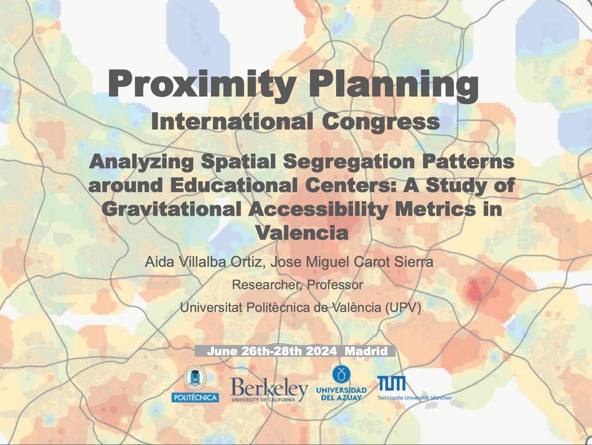
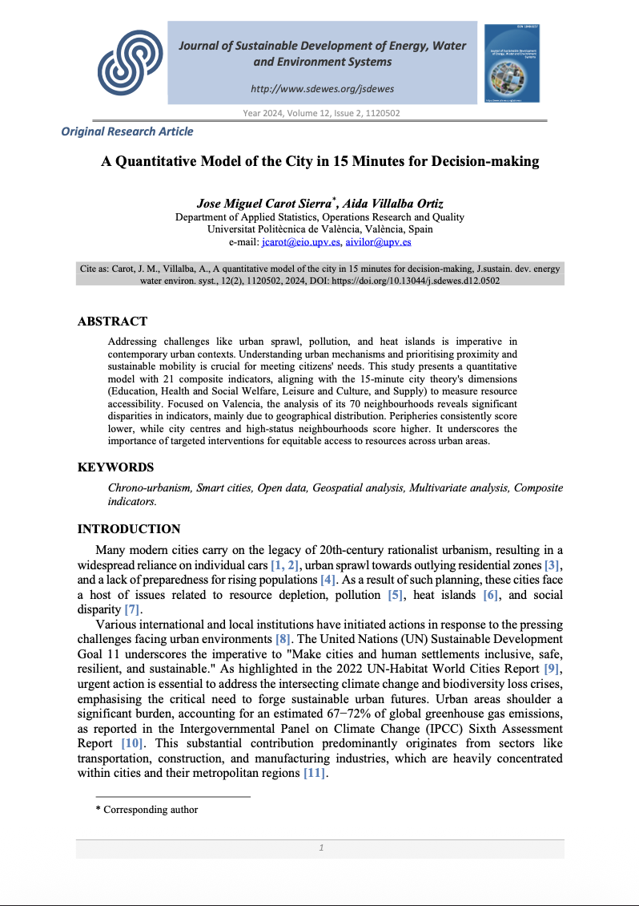
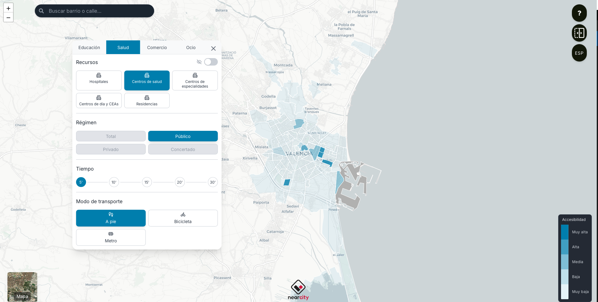
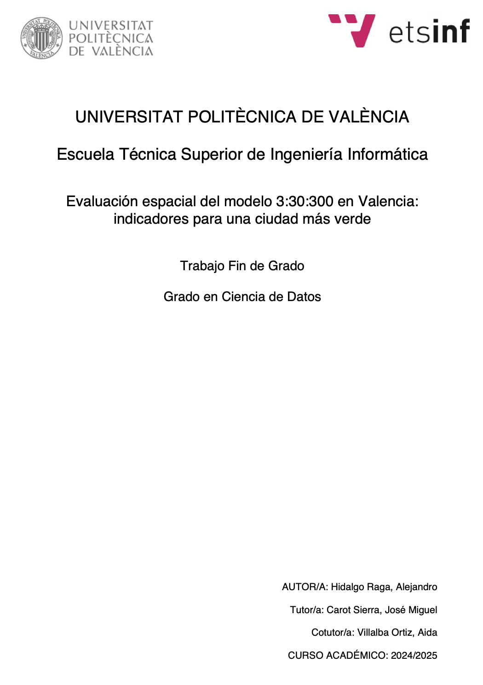
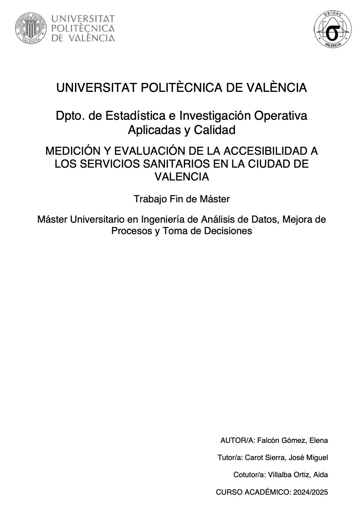
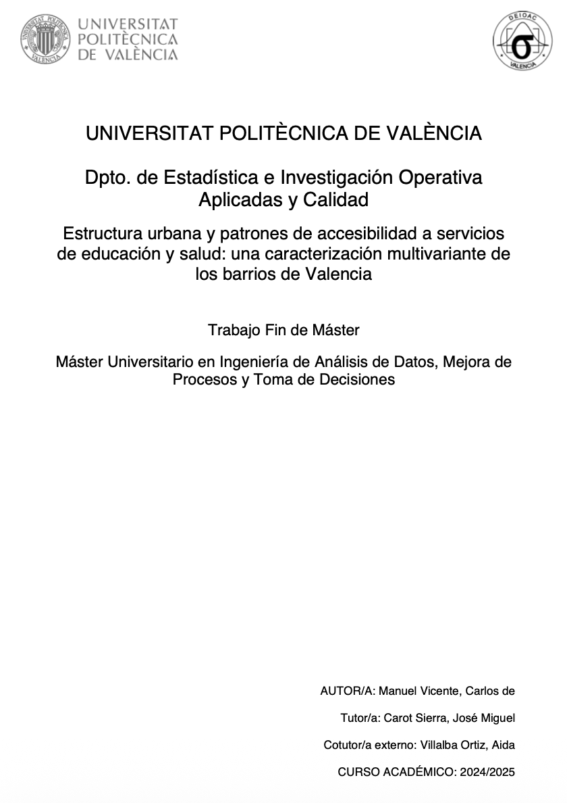
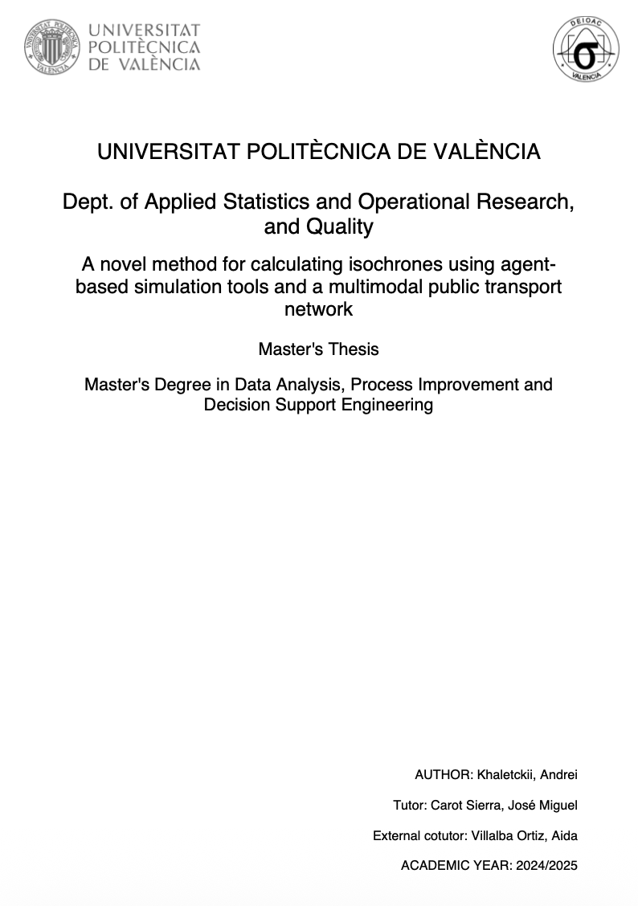

Statistics & Optimization · Universitat Politècnica de València
Aida Villalba Ortiz
I'm a PhD student researching accessibility, spatial statistics, and sustainable cities through quantitative methods, GIS, and network science.
Experience
Professional Experience
-
2025 – Present
Universitat Politècnica de València
Temporary University Lecturer
Statistics Teacher in the Higher Technical School of Industrial Engineering.
-
2024 – 2026
Universitat Politècnica de València
Senior Research Technician
Researcher in Spatial Statistics and developing the Nearcity project.
-

2023 – 2024Swisstraffic AG
Spatial Data Analyst
Development of the pipeline for image processing and spatial flows analysis.
Education
-
2026 – 2030
Universitat Politècnica de València
PhD in Statistics and Optimization
Thesis: [thesis title].
-
 2022 – 2023
2022 – 2023Universidad Complutense de Madrid
MSc in Smart and Sustainable Cities
Thesis: [thesis title].
-
2018 – 2022
Universitat Politècnica de València
BSc in Data Science
Thesis: Valencia in 15 minutes: geospatial modelling of the city.
Research
-

Analyzing patterns of accessibility to schools: A gravitational metrics study in València
A gravity-based index comparing how easily students reach schools across València's neighborhoods.
AIMS Mathematics·2025View journal
-

Analyzing Spatial Segregation Patterns around Educational Centers: A Study of Gravitational Accessibility Metrics in Valencia
Analyzing Spatial Segregation Patterns around Educational Centers: A Study of Gravitational Accessibility Metrics in Valencia
Proximity Planning Internation Congress·2024
-

A quantitative model of the city in 15 minutes for decision-making
A composite-indicator framework to measure how well urban areas meet the "15-minute city" standard.
JSDEWES·2024View journal
Projects
Platforms and tools built around spatial accessibility research.

Nearcity Platform
Nearcity is a spatial accessibility platform developed to analyse sustainable mobility, public services and urban accessibility using GIS, network science and spatial statistics.
Teaching
Courses
Degree and Master Thesis
-

Spatial evaluation of the 3-30-300 model in Valencia: indicators for a greener city
2024
Show repository -

Measuring and assessing access to healthcare services in the city of Valencia
2024
Show repository -

Urban structure and patterns of access to education and health services: a multivariate analysis of Valencia’s neighbourhoods
2024
Show repository -

A novel method for calculating isochrones using agent-based simulation tools and a multimodal public transport network
2024
Show repository